Home#


Welcome to the BoBiAC Book#
Welcome to the BoBiAC Book — your resource for the Boston BioImage Analysis Course (BoBiAC).
This book is designed for beginners and provides a hands-on introduction to image analysis using Python. Inside, you’ll find everything you need to follow the course: lecture slides, Jupyter notebooks, datasets, and step-by-step guidance through the material.
Lecture Slides#
All Lecture Slides within the book are available for download as PDFs.
You can download the complete slide decks from the Course Materials Downloads section of this book.
Additionally, each individual page that contains lecture slides has a Download the Slides button at the top for convenient access to slides for that specific topic.
Jupyter Notebooks#
All the Jupyter Notebooks within the book are available to download.
You can download the complete list of notebooks from the Course Materials Downloads section of this book.
Additionally, each individual page that contains Jupyter Notebooks has a Download this Notebook button at the top for convenient access to that specific notebook. All the notebooks can also be opened with Google Colab using the Open in Colab button at the top of each notebook page.
How to run the Notebooks#
All the Notebooks are designed to be used with uv and juv to avoid the need to deal with Python environments.
After installing uv you can run the following commands in your terminal to open the notebooks with Jupyter Lab in your browser:
uvx juv run path/to/your/notebook.ipynb
If you already ran uv tool install juv, you can simply run:
juv run path/to/your/notebook.ipynb
More details can be found in the Getting Started with Python and uv section of this book.
Course Datasets#
All the datasets used in this book are available to download from the Course Materials Downloads section.
Table of Contents#
Course Material
BoBiAC Exercises
Course Materials Downloads
Past Editions